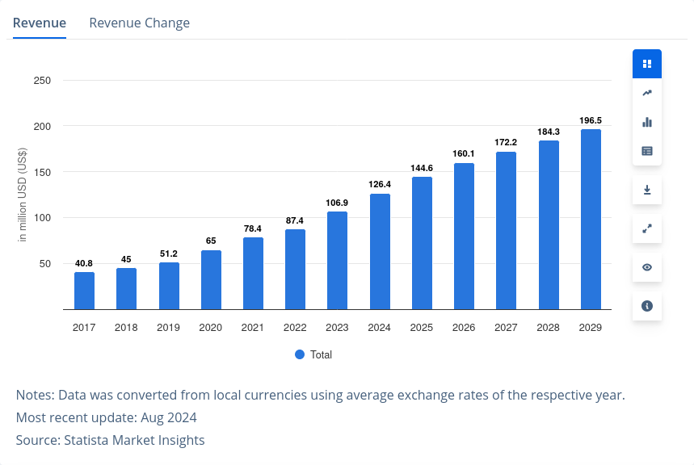
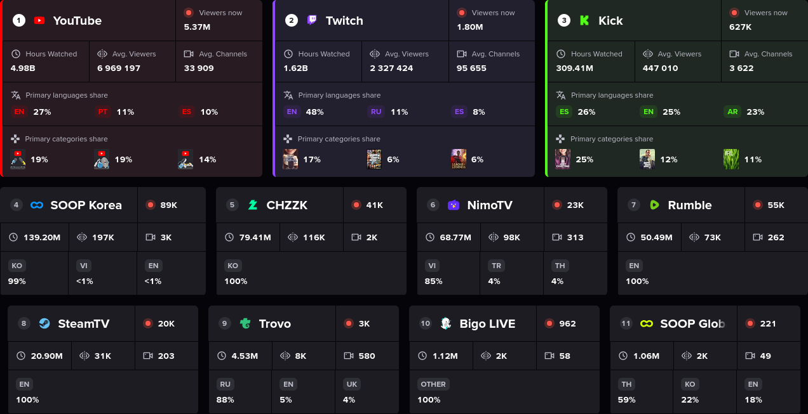

Wake up babe, a universal livestream utility just dropped.
You create, we do the rest. libcitrus.
파편화된 인터넷 방송 플랫폼을 유기적으로 연결하는 라이브러리


최근 방송인—시청자 사이에 새로운 소통 창구가 등장함
플랫폼의 파편화와 복잡한 API가 결국 컨텐츠 생산에 걸림돌으로 작용함
[-] 라이브러리 개발
[X] 공용 API 확립[-] 플랫폼 브릿지
[X] Twitch[X] Chzzk[ ] YouTube[ ] SOOP[-] 프로그래밍 언어별 라이브러리
[X] Java[X] Python[ ] JavaScript[-] 데모 개발
[ ] 시청자 선택 돌림판[X] 기존에 존재하는 게임의 모드[ ] 시청자 참여형 비디오 게임Rockstar Games에서 개발한 AAA 오픈월드 액션 어드벤처 게임, GTA 5
시청자가 투표로 결정하는 핸디캡을 받으며 미션을 해결하는 Chaos Mod
Mojang에서 개발한 샌드박스 게임, Minecraft로 포팅한 Entropy Mod